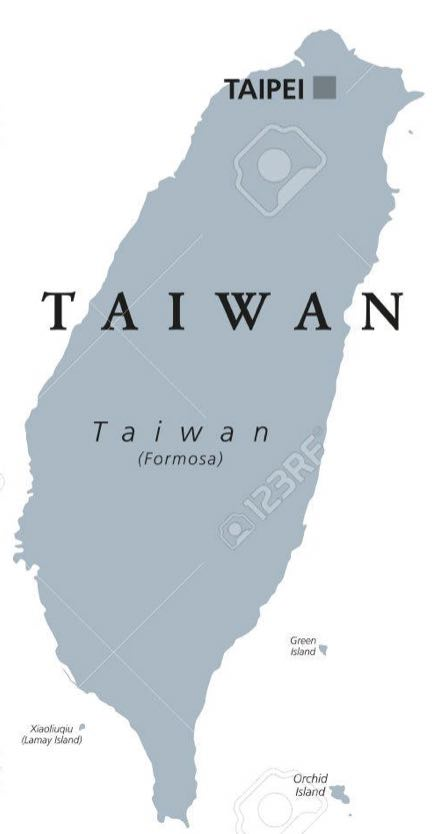
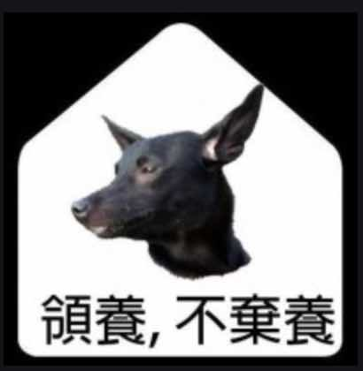

In honor of Chao's and Ma's Families
Be My Wife's Happy Philosopher
August F.Y. Chao
- Email: FYCHAO.tw@gmail.com
- Address: No. 7, R&D 6th Rd., Hsinchu Science Park, Hsinchu City, Taiwan, R.O.C. 30076
| Age |
Image |
| 24- |
 |
| 24~28 |
 |
| 28 |
 |
| 33 |
 |
| 37 |
 |
| 37 |
 |
| 39 |
 |
| 39 |
 Taiwan Computing Cloud, TWCC Taiwan Computing Cloud, TWCC |
| 40 |
 |
Dr. August Chao currently serves as Chief Engineer at TWS (Taiwan Web Service Company). Aug's most notable work is design workflow, service and mechanize for Taiwanina II (Top 20 in Top-500 supercomputer) and TWCC (Taiwan Computing Cloud). TWCC helps many new AI start-up companies and digital transformation for public and private sectors. Prior to his work in NARLabs and ITRI, his contributions in deep learning algorithms and services in NLP fields (TWI649712B(2019-02-01), US20190180190A1, CN109903115A), designing AI-HPC infrastructures (US 17/109,657, P097-2011402TW, patent pending) and confidential computing over cloud (US 17/108,329, P096-2011401TW, patent pending). He is currently also a industrial mentor (assistant professor) in NPU.
工作經歷 Work Experience
- 臺灣智慧雲端服務股份有限公司 PMTS Jan. 21' ~
- 國家高速網路與計算中心 設施服務組 副工程師 Jan 18' ~ Apr. 19', 平台開發組 Chief Programmer Apr. 19'~ Dec. 20'
- 中原大學 巨量資料學院 兼任助理教授 - 19' ~
- ITRI 工業技術研究院 巨量資料中心 文字探斟與分析技術部 工程師 - May 16' ~ Jan 18'
- 中原大學 巨量資料學院 兼任講師 - 16' ~ 18'
- 104年國家考試入闈
- 國立台北科技大學資管系代課講師 - Jun. 13'
- Hiiir 英屬維京群島商時間軸科技股份有限公司 iOS Intern - Jun. 13'~Dec. 13
- 私立中華大學兼任講師 - 10'~14'
- 國立政治大學兼任講師 - 10'~11'
- 耕莘專校兼任講師 - 09'~12'
- 教育部校務行政e化交流服務資訊網講師 - 09' PHP 網站應用設計、Linux 系統管理進階探討
- 中華大學資管系代課講師 - 網路管理、進階網路管理
- 宏基 駐 國家高速網路與計算中心 儲存設備系統維運工程師 (民國九十五年四月~九十六年三月)Acer On-Site Storage S.S.E. in National Center for High-Performance Computing (Apr. 06'~Mar. 07')
- Roodo.com 資深研發工程師 (民國九十四年九月~九十四年十一月)Roodo.com Senior R&D Engineer (Sept. 05'~Nov. 05')
- ToThere.com 技術長 (民國九十三年五月~九十四年九月)ToThere.com C.I.O. (May 04'~Sept. 05')
教育部助理教授證

教育部講師證

學歷 Education
- 國立政治大學 資訊管理研究所，博士，August 2008~February 2016。
畢業論文：兩種中文情感運算分析策略： 以部首為基礎及深層類神經學習
- 國立政治大學 資訊管理研究所，碩士，August 2006~July 2008。
畢業論文：文獻關聯之視覺化瀏覽平台建構研究
- 國立交通大學 管理科學學系，學士，August 1999~July 2002。
- 中華大學 資訊工程學系，學士肆，August 1997~July 1999。
- 省立鳳山高級中學。
發表專利 Patents
- TWI649712B(2019-02-01), US20190180190A1, CN109903115A, 趙逢毅, 吳豪仁, 黃冠誠, 陳力揚, 蔡易霖, "電子裝置、決策流程模組的呈現方法及電腦可讀式媒體"
發表論文 Professional Publications
Publish in Journal
- Yang, Heng-Li;Chao, August F.Y., 2018.04, 'Sentiment Annotations for Reviews: An Information Quality Perspective, ' Online Information Review,.(SSCI)
- Chao, August F.Y.;Yang, Heng-Li, 2018.01, 'Using Chinese Radical Parts for Sentiment Analysis and Domain-dependent Seed Set Extraction, ' Computer Speech & Language, Vol.47, pp.194-213.(SCIE)
- Chao, A. F., & Lai, C. Y. (2015). SNS Opinion-Based Recommendation for eTourism: A Taipei Restaurant Example. In Multidisciplinary Social Networks Research (pp. 393-403). Springer Berlin Heidelberg. (EI)
- Yang, Heng-Li;Chao, August F.Y., 2015.11, 'Sentiment Analysis for Chinese Reviews of Movies in Multi-genre ---Based on Morpheme-based Features and Collocations, ' Information Systems Frontiers, Vol.17, No.6, pp.1335-1352.(SCI)
- 趙逢毅、鍾曉芳。2013。基於字典釋義關聯方法的同義詞概念擷取：以《同義詞詞林（擴展版）》為例。中文計算語言學期刊。Special Issue on Chinese Lexical Resources: Theories and Applications. 18(2). pp.35-56. (THCI)
- Chao,August F.Y.;Yang, Heng-Li, 2012.04, "Knowledge Sharing Effects on the Market of Used Durable Goods: Agent-based Simulation Approach," Journal of Convergence Information Technology, Vol.7, No.7, pp.253 – 264.(EI)
- Chung, Siaw-Fong, F. Y. August Chao, Tien-Yu Lan, and Yen-Yu Lin. 2011. “Analyses of the Semantic Features of the Lexical Bundle [(VERB) PREPOSITION the NOUN of].” Language Value, 3(1). pp. 138-152. Also presented at the Third International Seminar on Metaphor and Discourse: Verb-particle Constructions and their Underlying Semantic Systems. Universitat Jaume I, Castelló de la Plana, Spain. October 19-20. (ISOC)
- 趙逢毅、鍾曉芳。2011。基於辭典詞彙釋義之多階層語義關聯程度計量 ─ 以「目」字部為例。中文計算語言學期刊。16（3-4）。21-40頁 。(THCI Core)
- 楊亨利、趙逢毅，“基於知識本體之文獻多維度關聯視覺化導覽平台，電子商務學報，第十三卷，第一期，2011年，27~54。(TSSCI)
Publish in Conference
- 劉昱劭, 趙逢毅, 黃俊龍，Pytorchor Tensorflow? A Lightweight CNN for container utilization analytics on TWCC cloud platform.，2020, TANET, 台北, 台灣。
- 方育斌，侯景祥， 趙逢毅 ，雲端運算平台之自動化軟體測試架構，第16屆 台灣軟體工程研討會，二○二○年七月，嘉義，台灣。
- 胡芯瑜, 陳博文, 楊銘軒, 趙逢毅, 應用人工智慧進行郵件預測處理時間的初探, 2019 Cyberspace, 2019-10-18, 大同大學。
- August F.Y. Chao, A General Domain Task for Benchmarking both Big Data Analytics and Deep Learning in Taiwan, 2018, TANET, 桃園, 台灣。
- 王貞淑, 趙逢毅, 賴正育, 以開放資料實作個人用藥安全管理應用程式, Open Data Conference, 2014-11-14, 台北大學。
- 趙逢毅, 楊亨利, 2014五月, 使用情感運算方法分析澎湖景點旅遊評論, ICIM2014第25屆國際資訊管理學術研討會, 中興大學, 台中。
- Chao, F. Y. August and Siaw-Fong Chung. 2013. “A Corpus-driven Pattern Analysis in Locative Phrases: A Statistical Comparison of Co-appearing Concepts in Fixed Frames” (語料庫導向之方位短句於固定框架的共現概念統計分析). Poster presented and paper in the Proceedings of the 25th Conference on Computational Linguistics and Speech Processing (ROCLING 2013). Kaohsiung, Taiwan, October 4-5.
- Chao, F. Y. August and Siaw-Fong Chung. 2013. “A Lexico-Semantic Analysis of Chinese Locality Phrases – A Topic Clustering Approach.” Iin the Proceedings of the Sixth International Conference on the Generative Approaches to the Lexicon. Pisa, Italy. September 24-25.
- Chung, Siaw-Fong and F.Y. August Chao. 2012. “A Semantic Integrated Vocabulary Analyzing Tool for ESL Teaching.” Paper presented at the 3rd International Symposium on Lexicography and L2 Teaching & Learning. Shaanxi Normal University, China. October 20-22.
- Chao, F.Y. August and Siaw-Fong Chung. 2012. “VocabGraph: Semantic Graph Inspector with Referred Word List.” Poster presented at the International Conference on Applied Linguistics and Language Teaching (ALLT). National Taiwan University of Science and Technology, Taiwan. April, 19-21.
- Chung, Siaw-Fong and F. Y August Chao. 2011. “Preposition-Containing Lexical Bundles and Idiomatic Expressions in Economics Dissertations.” Presented at the 10th Conference for the American Association for Corpus Linguistics (AACL), Georgia State University in Atlanta, GA, USA, October 7-9.
- Yang, Heng-Li;Chao,August F.Y., 2011.10, "Agent-based Modeling of Knowledge Sharing and Used-Car Market," The 4th International Workshop on Artificial Intelligence Applications for E-services at the 16th North-East Asia Symposium on Nano, Information Technology and Reliability.(EI)
- Chao, F. Y. August and Siaw-Fong Chung. 2010. “A Measurement of Metaphorical Relations in Mandarin Lexemes with Radical mu4: A Study based on Dictionary Explanation.” In the Proceedings of the Eleventh Chinese Lexical Semantics Workshop (CLSW 2010). Soochow University, China. May 21-23. pp. 148-154.
- Chung, Siaw-Fong, F.Y. August Chao and Yi-Chen Hsieh, “VocabAnalyzer: A Referred Word List Analyzing Tool with Keyword, Concordancing and N-gram Functions”. in Proceedings of the Pacific Asia Conference on Language, Information and Computation (PACLIC). Hong Kong, China. December 2-4, 2009.
- August F.Y. Chao, Vicky C.H. Huang, "Digital Citizen Media Network: An Open Source System Development Perspective", International Association for Intercultural Communication Studies, Kumamoto Gakuen University, Japan, September 18-20, 2009.
- Chung, Siaw-Fong, Chun-hung Chen and F.Y. August Chao. “Related Ontological Concepts of Mandarin Metaphors.”, Proceedings of the Third IEEE International Conference on Semantic Computing (ICSC). Berkeley, CA, USA. September 14-16, 2009.
- 楊亨利、趙逢毅，“兩岸三地問答平台之比較初探，十五屆海峽兩岸資訊管理發展與策略學術研討會，2009年8月18-20日，同濟大學，中國上海。
- Heng-Li Yang, August F.Y. Chao, “Design and Implementation of SOA-Driven Campus Email Service”, Business and Information 2009, July 6~8, Kuala Lumpur, Malaysia.
- 楊亨利、趙逢毅，“協助搜尋文獻的平台之芻議”，十三屆海峽兩岸資訊管理發展與策略學術研討會，2007年8月18-20日，北京交通大學，中國北京。
- 楊亨利、趙逢毅，“建構在全國博、碩士論文資訊網上的視覺化文獻互動關聯式瀏覽平台架構”，第六屆管理新思維研討會，2007年11月2日，台灣科技大學，台灣台北。
- 楊亨利、趙逢毅，“原位行動服務之個案探討”，第九屆電子化企業經營管理理論暨實務研討會，2008年5月24日，大葉大學，台灣彰化。
- Jiann-Min Yang, August F.Y. Chao and Hsuan Li, “A service-oriented framework of distributed elder house-care system: The enhanced data mining approach”, 2008 International Conference on Gerontic Technology and Service Management, May 20~21, NKU, Nantou, Taiwan.
Certification
Computer Skills
- NVIDIA DLI-NLP 講師, 2019
- 巨量資料分析師初級能力 B-B11-0036-2017
- Planner of Business Intelligence: CERPS1510680 (2015)
- Application Engineer of Property Management System in Front Office Module for WISE Web Hotel Manager V7.X 資訊系統應用師: CERPS1048398 (2014)
- MSCS Big Data (2014)
- HP ATA - Servers & Storage (2014)
- CompTIA Security+: 7Z4QESTL9CBEKZHC
Management
- 財團法人光華管理策進基金會 個案高階講座師資認證 2015A024
- Planner of Enterprise Resource Planning: CERPS1308032
- IACVA-TW 無形資產鑑價師 師資班結業 (2014)
- Planner of Property Management System 旅館資訊系統規劃師: CERPS1408565 (2014)
- 觀光餐旅客戶關係管理師: TIEA-THCRMM-10200110
- 觀光餐旅人力資源管理師: TIEA-THHRM-10200067
- 觀光餐旅消費者行為管理師: TIEA-THCBM-10200086
- Google AdWords: 廣告基礎考試, 進階搜尋, 多媒體廣告進階 2015-03
Language
- TOEIC 820 (B1), April 2008
- 觀光餐旅專業英文管理師: TIEA-THPEM-10200215
August F.Y. Chao, Ph.D. 趙逢毅 博士
Ngua Si Tai Uan Lang, Ngua Gou Hiong Di Bi-O.
(台臺灣話：我是台臺灣人，我家鄉在澎湖)
Google Maps My Home
I My Island,Taiwan 

---不自殺宣言---
本人生性樂觀開朗，近期至未來至耳順之年人生規劃，後事遺書也都已妥當。雖交友並不廣闊，唯幸身無隱疾，且家中尚有父母、外婆、老婆、阿布需奉養、照料，絕無任何自殺輕生之意圖。近期也未規劃前往外地旅遊踏青，雖生活作息幾許不正常，但也無進出聲色不正當場所。偶入冬時會接觸木炭，且時時注意撲滅。毒藥不碰，槍砲彈藥等危險管制物品，自退伍即不再接觸。若是本人被發現死亡，且現場無外力及打鬥掙扎痕跡，如在車內房間等等隱蔽場所，絕非本人自殺。另本人非常遵守交通法規，絕不於酒後駕駛動力交通工具或是超速行駛，若近期發生交通事故，定為有心人士所為。此外研究工作雖有壓力，但師長仍時時關心找我 meeting，尚不足成為自殘因素。
謹此宣告絕不自殺 絕不自找意外。